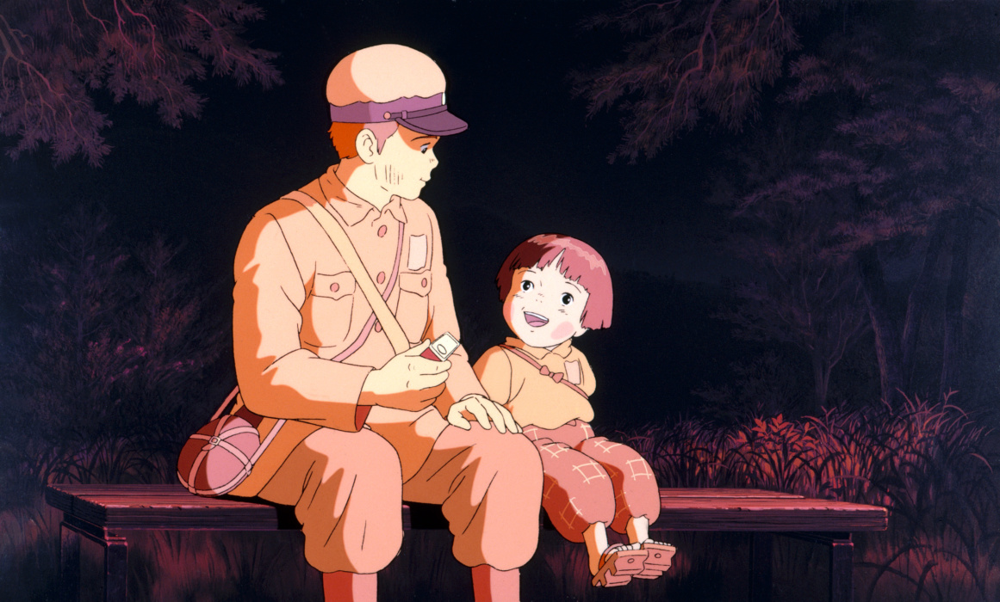
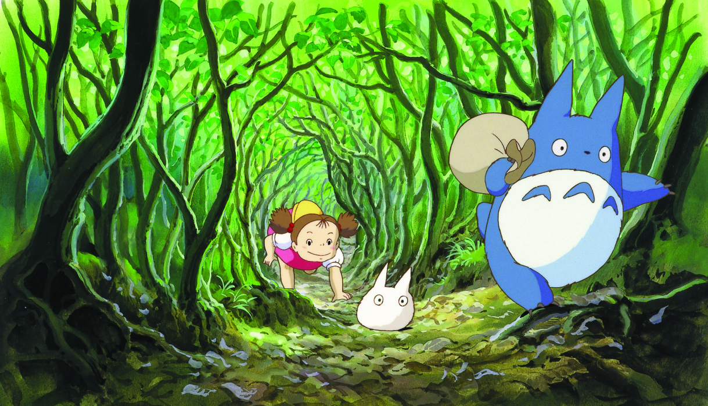
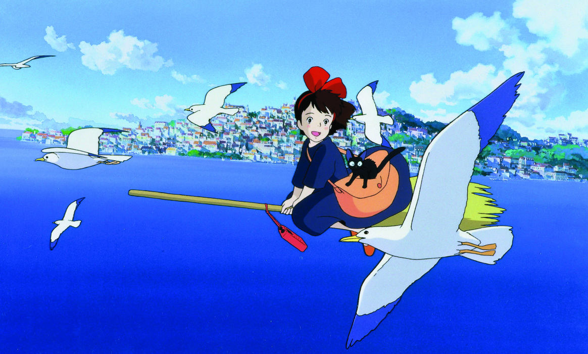
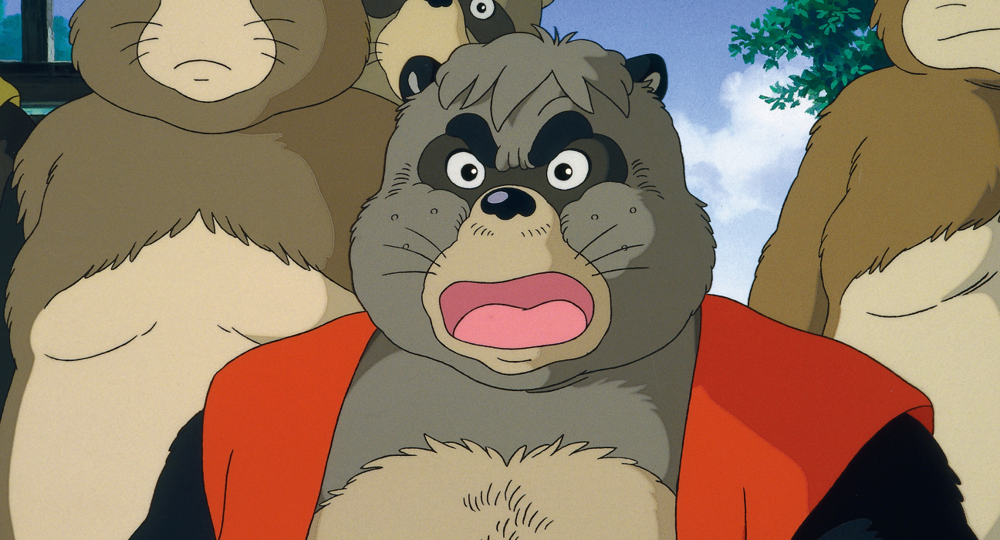
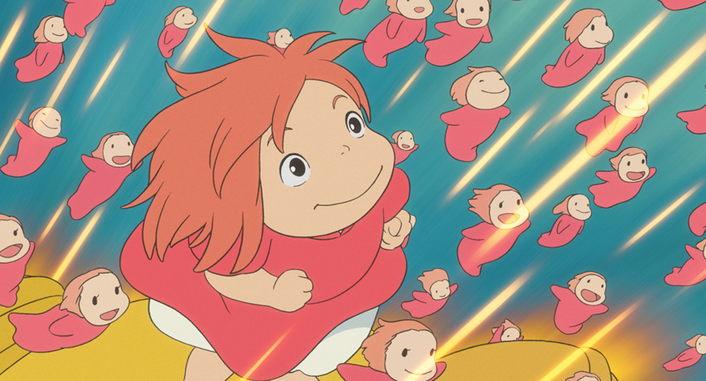

ALL FILMS

Nausicaä of the Valley of the Wind
1984
116 MIN

Castle in the Sky
1986
125 MIN

Grave of the fireflies
1988
89 MIN

My neighbor Totoro
1988
88 MIN

Kiki's delivery service
1989
102 MIN

Only yesterday
1991
120 MIN

Porco Rosso
1992
94 MIN

Pom Poko
1994
119 MIN

Wisper of the heart
1995
111 MIN

Princess Monokone
1997
133 MIN

My Neighbors The Yamadas
1999
104 MIN

Spirited Away
2001
125 MIN

The Cat Returns
2002
75 MIN

Howl's Moving Castle
2004
120 MIN

Tales of EarthSea
2006
116 MIN

Ponyo
2008
103 MIN

The Secret World of Arrietty
2010
95 MIN

From up on poppy hill
2011
91 MIN

The Tale of the Princess Kaguya
2013
138 MIN

The Wind Rises
2013
127 MIN

When Marnie was there
2014
103 MIN

Earwig and the Witch
2020
82 MIN